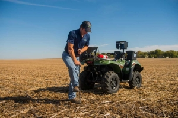

Servicios
En esta empresa también ofrecemos diferentes servicios. Algunos de estos servicios son los siguientes:
Almacenaje de mercancía

En sus más de 8000 m2 de superficie, podemos almacenar tanto producto a granel como en sacos. Las condiciones de temperatura, humedad y ventilación, son muy importantes para conservar el buen estado de la materia prima.
Análisis de tierras y plantas
Podemos indicar que el análisis de la tierra es la base de partida para realizar un adecuado abonado a los cultivos, a través del cual, se añadirán al suelo los nutrientes que éste precise y se recomienda los fertilizantes adecuados en función de los contenidos de nutrientes.
Servicio de abonadora
Disponemos de camiones cinta para llevar al instante abono al granel a finca y llenar la abonadora. Igualmente en líquidos, disponemos de un servicio directo a la finca, incluyendo la aplicación si el cliente lo requiere.
Secadero de maíz en horizontal
Para dar un servicio completo a nuestros clientes, disponemos de un secadero horizontal en nuestras instalaciones en Santa Amalia ayudándonos a tener nuestro producto en su punto exacto de calidad todo el año. Nuestra fuente principal de calor es la Biomasa contribuyendo a una reducción significativa de costes y sobre todo al cuidado del medio ambiente.
Transporte de mercancías
Somos una empresa que ofrecemos de manera personalizada la solución de transporte más apropiada a las necesidades de nuestros clientes.
Consultoría Dpto. Agrónoma
Transformación de fincas, puestas en riego e infraestructura hidráulica, plantaciones de frutales, asesoramiento sobre cultivos anuales…